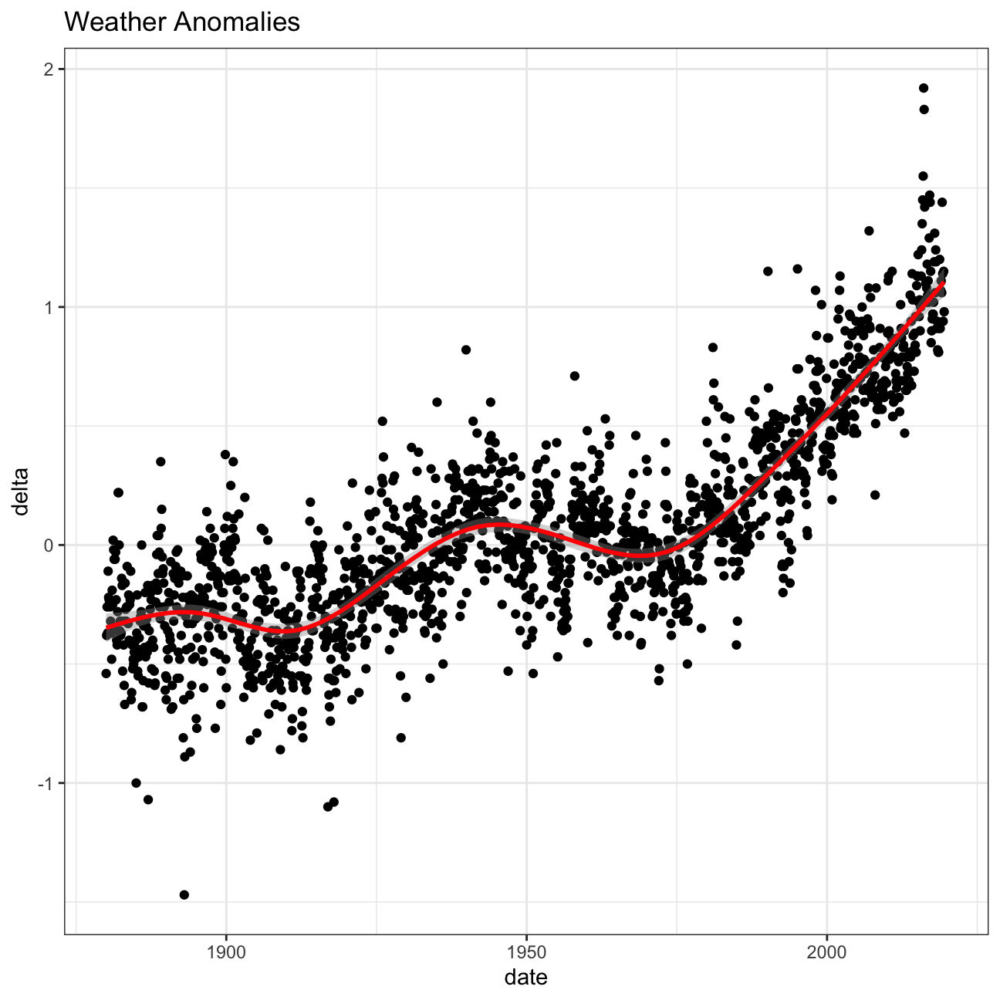
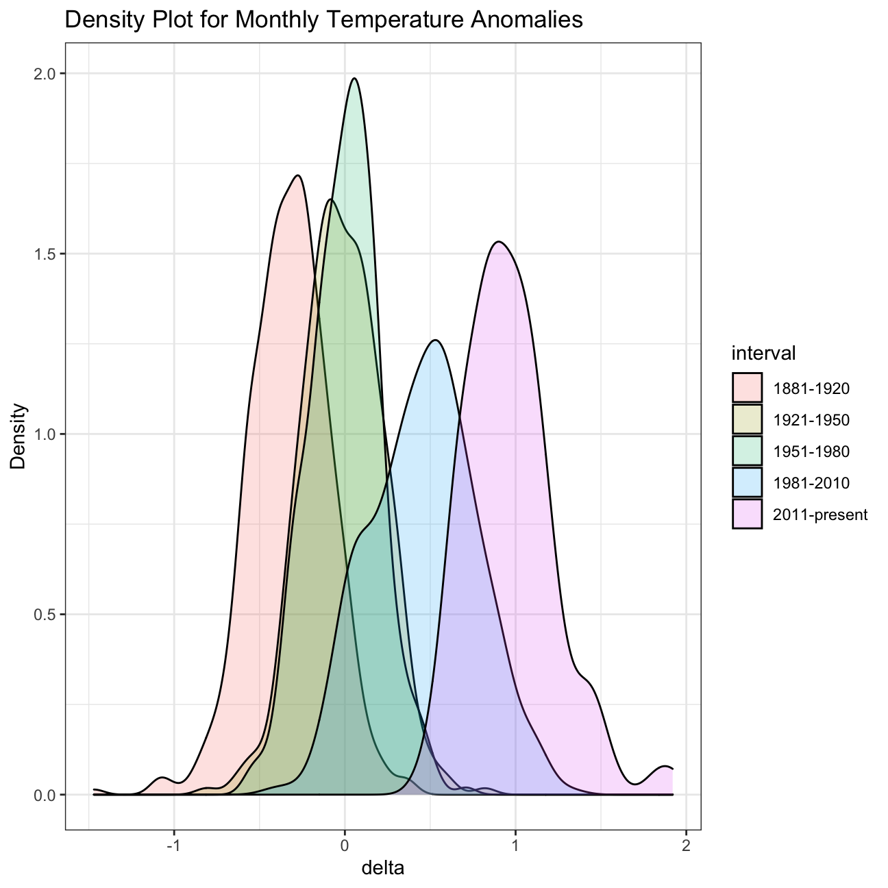

If we wanted to study climate change, we can find data on the Combined Land-Surface Air and Sea-Surface Water Temperature Anomalies in the Northern Hemisphere at NASA’s Goddard Institute for Space Studies. The tabular data of temperature anomalies can be found here
To define temperature anomalies you need to have a reference, or base, period which NASA clearly states that it is the period between 1951-1980.
weather <-
read_csv("https://data.giss.nasa.gov/gistemp/tabledata_v3/NH.Ts+dSST.csv",
skip = 1,
na = "***")#tidy data
tidyweather <- weather %>%
#select the year and months column (i.e. the first 13 columns)
select(Year:Dec) %>%
#change format to long
pivot_longer(cols = Jan:Dec, names_to = "month", values_to = "delta")
#inspect data
glimpse(tidyweather)## Rows: 1,680
## Columns: 3
## $ Year <dbl> 1880, 1880, 1880, 1880, 1880, 1880, 1880, 1880, 1880, 1880, 188…
## $ month <chr> "Jan", "Feb", "Mar", "Apr", "May", "Jun", "Jul", "Aug", "Sep", …
## $ delta <dbl> -0.54, -0.38, -0.26, -0.37, -0.11, -0.22, -0.23, -0.24, -0.26, …Let us plot the data using a time-series scatter plot, and add a trendline.
#create a new variable "date" to ensure our plot is in chronological order
tidyweather <- tidyweather %>%
mutate(date = ymd(paste(as.character(Year), month, "1")),
month = month(date, label=TRUE),
year = year(date))
ggplot(tidyweather, aes(x=date, y = delta))+
geom_point()+
geom_smooth(color="red") +
theme_bw() +
labs (
title = "Weather Anomalies" #add a more descriptive title
)
Is the effect of increasing temperature more pronounced in some months?
#ordering by month the dataset
tidyweather$month = factor(tidyweather$month, levels = c("Jan", "Feb", "Mar", "Apr", "May", "Jun", "Jul", "Aug", "Sep", "Oct", "Nov", "Dec"))
#scatter plot for each month
ggplot(tidyweather, aes(x = date, y = delta)) +
geom_point()+
geom_smooth(color = "red")+
facet_wrap(~month)+
theme_bw()+
labs(title = "Weather Anomalies for All Months")+
NULLIt is sometimes useful to group data into different time periods to study historical data.
comparison <- tidyweather %>%
filter(Year>= 1881) %>% #remove years prior to 1881
#create new variable 'interval', and assign values based on criteria below:
mutate(interval = case_when(
Year %in% c(1881:1920) ~ "1881-1920",
Year %in% c(1921:1950) ~ "1921-1950",
Year %in% c(1951:1980) ~ "1951-1980",
Year %in% c(1981:2010) ~ "1981-2010",
TRUE ~ "2011-present"
))Now that we have the interval variable, we can create a density plot to study the distribution of monthly deviations (delta), grouped by the different time periods we are interested in. Set fill to interval to group and colour the data by different time periods.
ggplot(comparison, aes(x=delta, fill=interval))+
geom_density(alpha=0.2) + #density plot with tranparency set to 20%
theme_bw() + #theme
labs (
title = "Density Plot for Monthly Temperature Anomalies",
y = "Density" #changing y-axis label to sentence case
)
So far, we have been working with monthly anomalies. However, we might be interested in average annual anomalies. We can do this by using group_by() and summarise(), followed by a scatter plot to display the result.
#creating yearly averages
average_annual_anomaly <- tidyweather %>%
group_by(Year) %>% #grouping data by Year
# creating summaries for mean delta
# use `na.rm=TRUE` to eliminate NA (not available) values
summarise(annual_average_delta = mean(delta, na.rm=TRUE))
#plotting the data:
ggplot(average_annual_anomaly, aes(x= Year, y= annual_average_delta))+
geom_point()+
#Fit the best fit line, using LOESS method
geom_smooth() +
#change to theme_bw() to have white background + black frame around plot
theme_bw() +
labs (
title = "Average Yearly Anomaly", x = "Year", y = "Average Annual Delta"
) deltaNASA points out on their website that
A one-degree global change is significant because it takes a vast amount of heat to warm all the oceans, atmosphere, and land by that much. In the past, a one- to two-degree drop was all it took to plunge the Earth into the Little Ice Age.
formula_ci <- comparison %>%
# choose the interval 2011-present
filter(interval == "2011-present", !is.na(delta)) %>%
# calculate summary statistics for temperature deviation (delta)
# calculate mean, SD, count, SE, lower/upper 95% CI
summarise(mean_delta = mean(delta),
sd_delta = sd(delta),
count = n(),
se_delta = sd_delta / sqrt(count),
t_critical_0.95 = qt(0.95, count - 1),
margin_error = t_critical_0.95 * se_delta,
CI_lower = mean_delta - margin_error,
CI_upper = mean_delta + margin_error
)
#print out formula_CI
formula_ci %>%
select(mean_delta, sd_delta, count, se_delta, CI_lower, CI_upper)## # A tibble: 1 x 6
## mean_delta sd_delta count se_delta CI_lower CI_upper
## <dbl> <dbl> <int> <dbl> <dbl> <dbl>
## 1 0.966 0.262 103 0.0259 0.923 1.01# use the infer package to construct a 95% CI for delta
library(infer) #include this library in the loadlibraries section
set.seed(1234)
bootstrap_comparison <- comparison %>%
# choose the interval 2011-present
filter(interval == "2011-present", !is.na(delta)) %>%
#variable of interest
specify(response = delta) %>%
#bootstrap sample
generate(reps = 1000, type = "bootstrap") %>%
#calculate mean of sample
calculate(stat = "mean")
#get confidence interval
confidence_interval <- bootstrap_comparison %>%
get_ci(level = 0.95, type = "percentile")
#print confidence interval
confidence_interval## # A tibble: 1 x 2
## lower_ci upper_ci
## <dbl> <dbl>
## 1 0.917 1.02The first and third exhibit - weather anomalies and average yearly anomalies - demonstrate how temperatures have changed for the past 140 years. It shows that temperatures, during this period, have been gradually increasing. During the period, the difference of temperatures between the actual and the base period ranged from around -0.2 to about +1.1 degrees, showing a sharper increase from 1970 onwards. The second exhibit displays that although there are some slight disparities across months, the trendline is very similar for all. The third exhibit portraits a similar conclusion. Through the density plot function, it is possible to notice that each curve is repetitively shifting to the right, i.e. the difference between period’s temperatures and base period’s have been increasing. Lastly, the confidence intervals showcase that, on average, the temperature is approximately +0.966 degrees than the temperature of the base period. Additionally, the data allows us to claim that under a 95% confidence interval the values of delta will range between (+0.923 and +1.01).